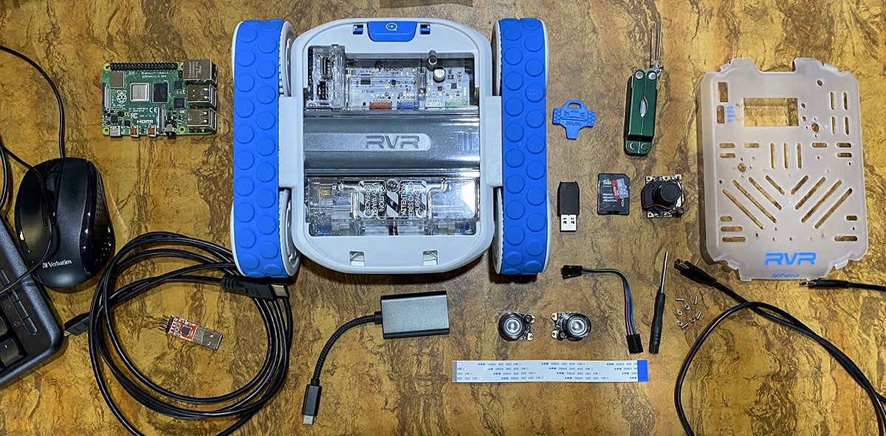
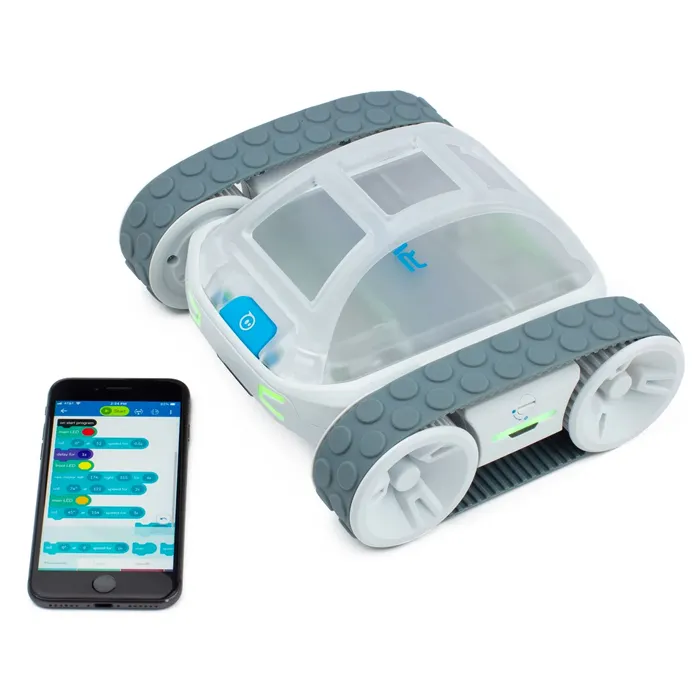
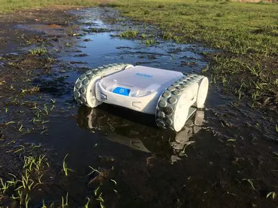
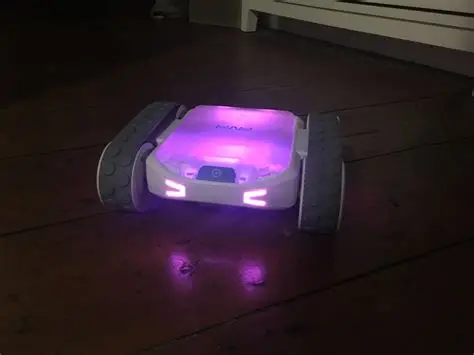
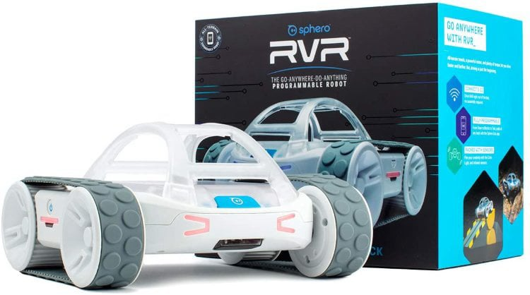

Offline Website Maker
RGB színérzékelő – felismeri a színeket és fény erősségét.
Fényérzékelő és infravörös (IR) kommunikáció.
9‑tengelyű IMU – giroszkóp, gyorsulásmérő és magnetométer a pontosabb mozgásvezérlésért.
UART bővítő port — harmadik féltől származó hardver, például Raspberry Pi, Arduino vagy micro:bit csatlakoztatható.
Két erős DC‑motor hajtja a robotot, amely lánctalpas jellegű kialakítással bír a jó tapadásért és terepjáró képességért.
Maximális sebesség: kb. 3,6 km/h (változattól függően).
Li‑ion akkumulátor, USB‑C‑vel tölthető, akár 2 óra üzemidő egy töltéssel.
Programozható Sphero Edu alkalmazással: vizuális blokkoktól egészen Python/JavaScript‑ig.

Kezdőktől haladókig, vizuális blokkoktól Python/JavaScript-ig.
Alapvető programozási logikák: ciklusok, elágazások, függvények.
Szemlélteti az érzékelővezérelt döntéshozatalt a valós roboton.

Robot mozgásának mérése és optimalizálása fizikai paraméterek szerint.
Adatok gyűjtése: sebesség, távolság, fény, szín.
Projektek: vonalkövető robot, akadálykerülő algoritmusok, önvezető robotok prototípusa.

Egyedi robotikus eszközök építése: mini járművek, interaktív játékok, kísérleti szerkezetek.
Tanulás játékos formában, ahol a diákok látják a programozott viselkedés azonnali eredményét.

Akadálypályák, időre teljesített feladatok.
Pontszerzés: objektumok szállítása, érzékelő alapú célzás.
Csapatmunka, taktikai gondolkodás, projektmenedzsment fejlesztése.
Hivatalos Sphero rvr bemutató videó
Offline Website Maker